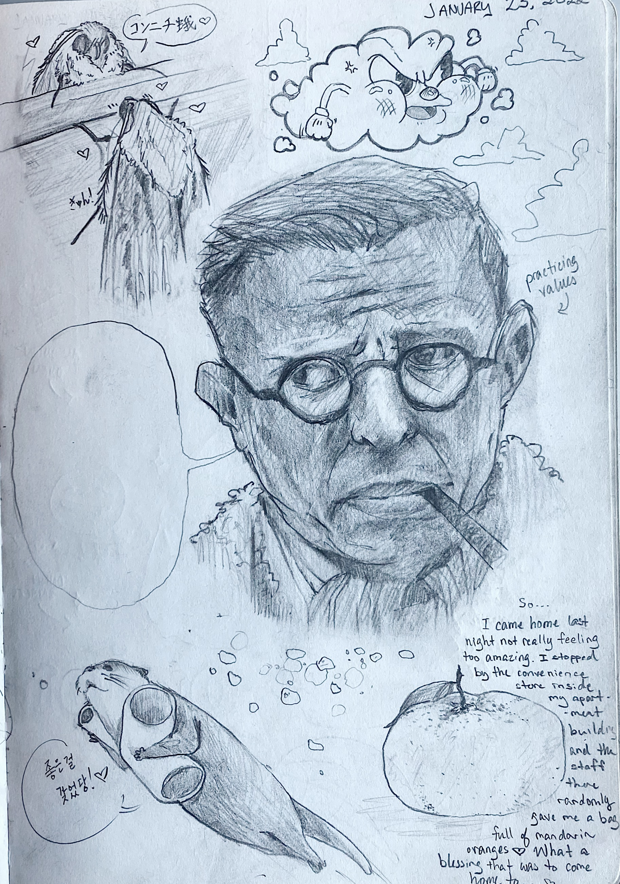

another moth, gazing lovingly at his reflection; an old-cartoony style cloud; some value practice using Sartre's face (a.k.a.; philosophy's most interesting face) and an empty speech bubble; another cute otter to soothe the heart; and a sketch of an orange after coming home from a sort of difficult day and being given a bag of them by the convenience store clerk in my apartment ❤️